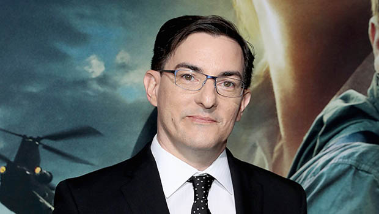
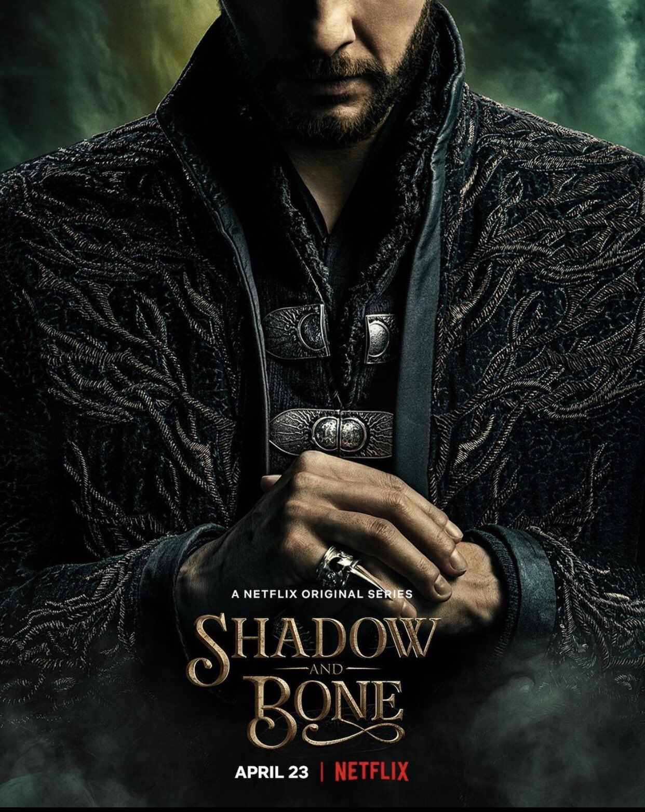
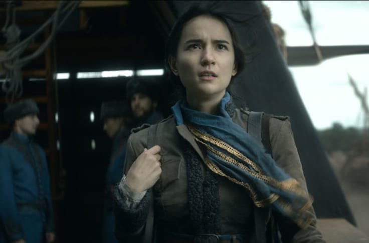
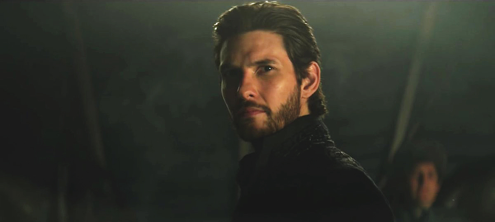
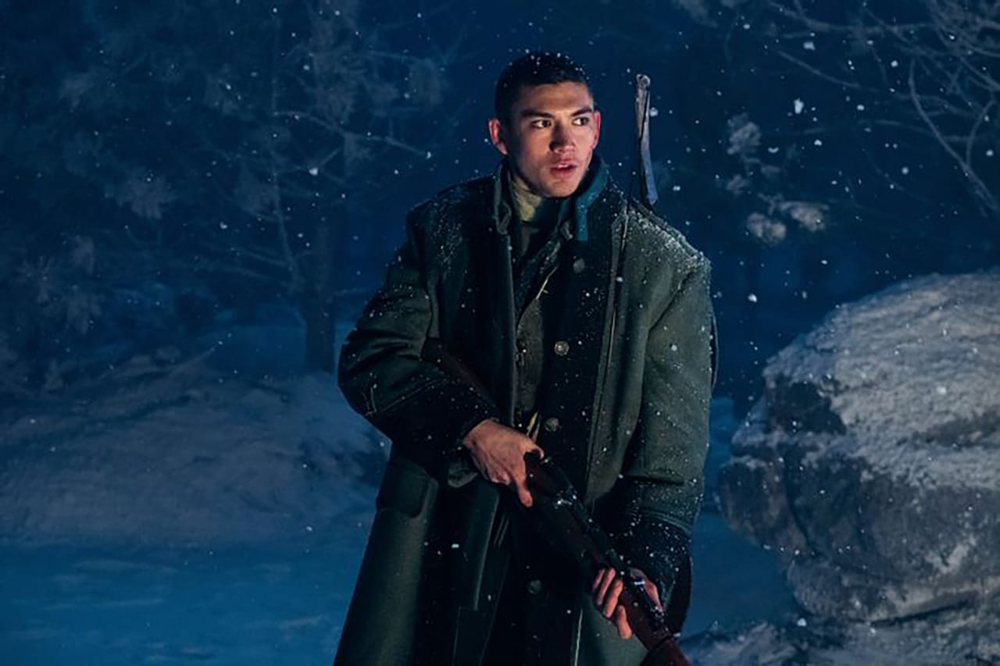
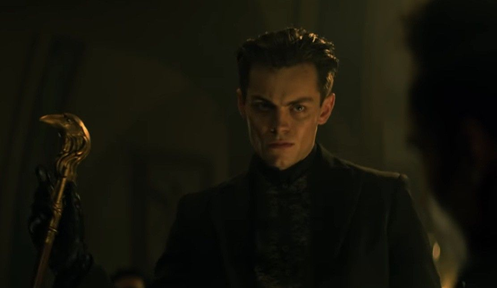
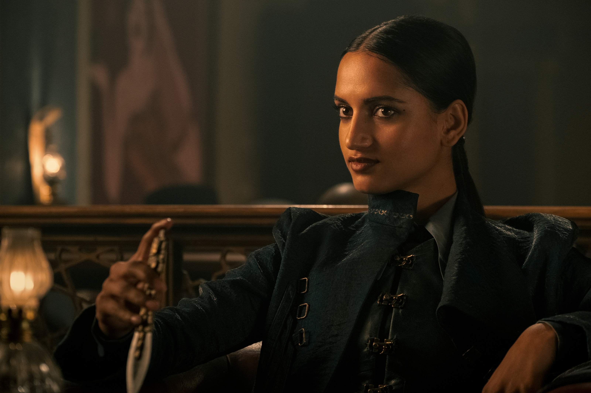
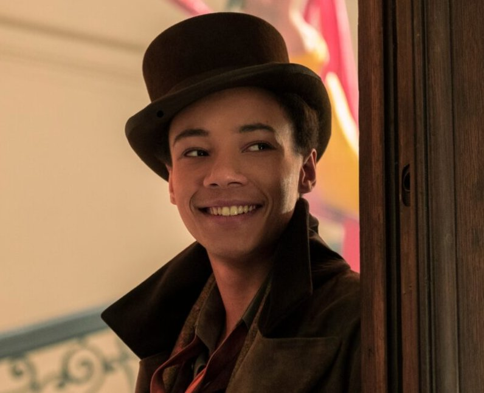

Shadow and Bone está basada en las novelas grishaverse más vendidas a nivel mundial del escritor israelí-estadounidense, Leigh Bardugo. La novela homónima es el primer libro de la trilogía grisha seguido de Asedio y tormenta y ruina y levantamiento.
Pero el programa de televisión Shadow and Bone adapta no sólo la trilogía grisha, sino también los Seis de cuervos duology, Seis cuervos y Reino torcido, reuniendo a personajes de ambas series e incorporándolos a la historia de Sombra y Hueso.
DETRAS DE ESCENAS
Netflix está lanzando una nueva serie de fantasía, y es hora de que otra temporada de Behind the Scenes entienda cómo sucede todo. Esta vez, nos sumergiremos de cabeza en el mundo épico de Shadow and Bone. A partir del 28 de abril, el presentador Brandon Jenkins (Mogul; Complex) se sentará con la gente detrás de escena del programa. Escucharemos a showrunners y escritores, actores y diseñadores, efectos especiales y más. Ponte las cortinas porque estamos convocando mucho sol esta temporada.
SINOPSIS
Ravka, un reino de fantasía basado en el Imperio RusoZarista, está ambientado en un mundo devastado por la guerra plagado por el Shadow Fold, una franja de oscuridad permanente que separa el este del Ravka Occidental, que está habitada por criaturas carnívoras aladas conocidas como Volcra. La cartóloga huérfana Alina Starkov descubre que es una Grisha (tiene poder para manipular la materia) que posee el poder de crear luz, que podría ser la clave para liberar a su país del Fold. Alina se une a un ejército de élite de Grisha sirviendo bajo el general Kirigan, el Invocador de las Sombras.
Pero mientras lucha por perfeccionar su poder, descubre que los aliados y enemigos pueden ser los mismos y que nada en este mundo lujoso es lo que parece. Hay fuerzas peligrosas en juego, incluyendo un equipo de criminales carismáticos, y se necesitará más que magia para sobrevivir.
Eric Andrew Heisserer

Eric Andrew Heisserer (nacido en ) es un guionista y escritor de cómics estadounidense. Su guión para la película Arribo le valió una nominación a Mejor Guión Adaptado en los 89 Premios de la Academia en .
También escribió las películas de terror A Nightmare on Elm Street (remake de ), Destino final 5, The Thing (película precuela de ), Lights Out y Bird Box, y escribió y dirigió Horas con Paul Walker.
La carrera de guionista profesional de Heisserer se inició con la venta de The Dionaea House a Warner Bros. en , basada en una historia epistolar en línea del mismo nombre que escribió desde el otoño de hasta el invierno de . The Dionaea House fue una novela multimedia contada a través de múltiples blogs dirigidos por personajes de ficción, y se refería a una casa siniestra que existía en varios lugares de los Estados Unidos. Se considera una de las primeras historias de creepypasta populares. Luego desarrolló un piloto de televisión original para Paramount Pictures y CBS, y escribió proyectos de largometraje para Jerry Bruckheimer Films y Warner Bros .
En , vendió un lanzamiento a Regency Enterprises y Fox llamado Inhuman , un thriller sobrenatural ambientado en Tokio que combina secuencias de acción en vivo y anime.
En diciembre de , Heisserer fue contratado para volver a imaginar y reescribir el guión del reinicio de la franquicia de A Nightmare on Elm Street, producido por Platinum Dunes. Wesley Strick había escrito un primer borrador. El guión pasó al director Samuel Bayer, al actor Jackie Earle Haley, y comenzó a filmar en mayo de .
Reescribió la precuela del remake de del director John Carpenter, The Thing.
En , Heisserer firmó un contrato para escribir Destino final 5 , la quinta película de la franquicia de películas de terror.
Heisserer hizo su debut como director con la película Hours , protagonizada por Paul Walker. Heisserer coescribió The Conjuring 2 junto con los hermanos Chad Hayes y Carey Hayes. Heisserer escribió junto con el artista Felipe Massafera y el colorista Wes Dzioba, la serie de cómics Shaper .
Heisserer escribió la película de Arrival basada en el cuento de Ted Chiang "La historia de tu vida". Heisserer ha dicho que se sintió atraído por el desafío de adaptar la historia no lineal por su contenido emocional. Después del estreno de la película, fue nominado a Mejor Guión Adaptadoen los 89º Premios de la Academia.

En , Heisserer anunció que estaba desarrollando una serie de ciencia ficción basada en la historia de otro Ted Chiang,"Me gusta lo que ves: un documental" , para AMC. La serie explorará conceptos como belleza, relaciones y publicidad.
El , se anunció que Heisserer escribiría el guión del remake de acción en vivo del anime romántico de ciencia ficción Your Name . En , fue reemplazado por Lee Isaac Chung y Emily V. Gordon.
Heisserer escribió el guión de Bird Box ( ) , basado en el libro de suspenso Bird Box, de Josh Malerman. Lanzada por Netflix, la película está protagonizada por Sandra Bullock y fue dirigida por Susanne Bier.
Heisserer se desempeña como creador, escritor principal, corredor de espectáculos y productor ejecutivo de la serie de Netflix de 2021 Shadow and Bone , una adaptación de la serie de libros de fantasía The Grisha Trilogy y Six of Crows Duology.
personajes

Alina Starkov
Alina es una joven cartógrafa que vive en Ravka, donde descubre que tiene el poder de manipular la luz del sol, un poder especial que podría ayudar a destruir la muralla de sombra. Ella es originaria de Shu-Han y es entrenada en la magia por el general Kirigan.

Alexander Kirigan
Kirigan es el Grisha más poderoso y es capaz de invocar la sombra, además está al frente del segundo ejército y desde el primer momento siente curiosidad por los poderes y habilidades de Alina. También se le conoce como The Darkling.

Maylen Oretsev
Maylen creció junto a Alina y eventualmete se une al Primer Ejército de Ravka para defender al reino de la Sombra, aunque no es un Grisha.

Kaz Brekker
Brekker es un ladrón excepcional, es uno de los cuervos de Ketterdam y solo confía en sus aliados más cercanos. Brekker es el líder de los Dregs, una de las pandillas de la ciudad

Inej Ghafa
Ella es una espía y asesina, fue vendida como esclava a Brekker, pero él la libera y la hace parte de su pandilla, aunque ella tiene un compás moral y principios que la llevan a cuestionar lo que hacen.

Jesper Fahey
Jesper es un pistolero fanático de las apuestas y miembro de los Dregs y pone su lealtad completamente en los cuervos.